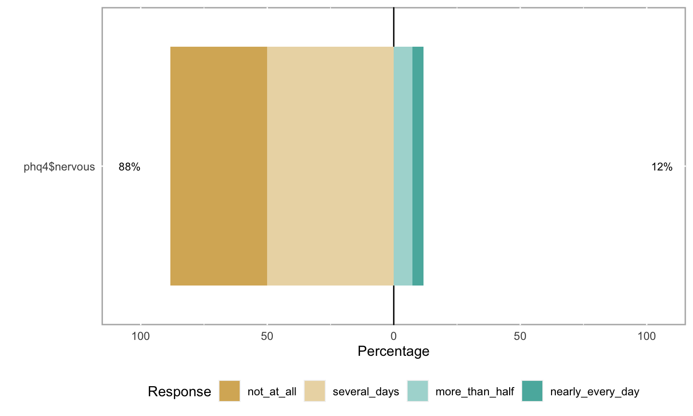

- Support from NICHD, NIH/OD, NIMH, & NIDA via R01HD094830-01; NSF via 2032713; the LEGO Foundation; & the Alfred P. Sloan Foundation
- Karen Adolph, Cathie Tamis-LeMonda, Orit Hertzberg, Tiger Teng
2022-04-20 23:01:41
Acknowledgements
Overview
- What is PLAY
- Why PLAY
- Challenges..met and meeting
- A sneak peak
- Let play be our work
What is PLAY
- ~1,000 mother-infant dyads (12-, 18-, 24-mos)
- 1 hr natural behavior (video)
- 5 min structured play (video)
- House tour (video)
- Parent-report questionnaires (video & electronic form)
- Ambient sound levels
- Rigorous quality assurance (QA) control
- Utterance-level transcription (child & mother)
- Foundational video coding passes covering multiple psychological domains
- Language and communication
- Locomotion and physical activity
- Object interaction
- Emotional expression
- Using Datavyu
- Common, openly shared dataset on Databrary
- Dataset as deliverable
- Investigator-specific questions…
- Catalyze/expand capacity to exploit video
- Pioneer & polish tools for big data open developmental science
Why PLAY
Whys
- Conceptual
- Analytical
- Methodological
Natural behavior
- Rich, varied, interesting, & important (Adolph, 2020)
- Can be captured with video (Adolph, Gilmore, & Kennedy, 2017)
- Can be analyzed systematically by human observers
- Environments outside the lab most representative of children’s experiences
- Tackling the ‘generalizability crisis’ (Yarkoni, 2020), head-on (West et al., 2022).
Behavior is multi-dimensional, yet…


“Assuming a realistic range of prior probabilities for null hypotheses, false report probability is likely to exceed 50% for the whole literature.”
Open developmental science
- Presents opportunities (Gennetian, Tamis‐LeMonda, & Frank, 2020)
- Poses surmountable challenges (Gilmore, Cole, Verma, Aken, & Worthman, 2020)
- “…will be more rigorous, robust, and impactful” (Gilmore & Qian, 2021)

“The advancement of detailed and diverse knowledge about the development of the world’s children is essential for improving the health and well-being of humanity. The Society for Research in Child Development (SRCD) regards scientific integrity, transparency, and openness as essential for the conduct of research and its application to practice and policy. These values apply to research conduct, to the teaching of scientific methods, and to the translation of science into practice and policy.”
https://www.srcd.org/policy-scientific-integrity-transparency-and-openness

PLAY: Science in the open
- Planning workshop
- Web site (https://play-project.org) & protocol videos
- Data management & curation (Soska et al., 2021)
- GitHub repo
- Planning for future reuse
Growing Databrary
- Restricted access data library
- Specialized for storing & sharing video/audio + related data
- Protects identifiable or sensitive data
- Permits onen (but not necessarily public)
- Emphasize participant permission-to-share
- Video as data (Adolph et al., 2017), demonstration, & documentation (Gilmore & Adolph, 2017)
- Developed by and especially for developmental scientists

Video, audio, + other types
Challenges…met and meeting
Sampling
- Who to include?
- Age range(s)?
- What language backgrounds?
- Where to sample?
- What to vary, what to keep constant?
- Is ‘an hour in the life’ representative?
- What parent-report survey questions & how to collect?
- What behaviors to code from video?
- 12-mo-olds, 18-mo-olds, & 24-mo-olds
- Only English and Spanish-speaking households
- Child and mother
- 31 sites
- Informed by Census demographics
Races reported in PLAY counties
Ethnicity reported in PLAY counties
Languages spoken in PLAY counties
Educational attainment in PLAY counties
Household income in PLAY counties
Survey questions
- Health
- Child health
- Mother prenatal health & behavior
- Mother mental health (PHQ-4)
- Early Childhood Behavior Questionnaire (Rothbart)
- Locomotor milestones
- MacArthur-Bates Communicative Development Inventory (MB-CDI)
- New dual-language learning (DLL) inventory Tamis-Lemonda, et al.
- Media use
- Pets
- Household structure
- Division of labor
- Typical day

Behaviors to code
- Foundational video coding passes
- Multivariate, interlocking timelines of infant and mother behavior:
https://nyu.databrary.org/slot/27087/0,372193/asset/119877/download?inline=true
Other challenges
- IRB
- Distributed collection & coding
- Common sharing permission language based on Databrary template
- Common data use agreement: Databrary Access Agreement
- Findable, usable beyond launch group
- Limitations of Databrary 1.0
- Data in-process vs. data shared
- Original data in original volume, but also in aggregate PLAY volume
- Versioning data, protocol, coding schemes
- Add-on, follow-up studies
- New data
- Augmented, new video annotations
- COVID-19
A sneak peak
Release levels

Video data
- 1-hour natural play: https://nyu.databrary.org/slot/18825/78777000,82445800/asset/85849/download?inline=true
- Structured play: https://nyu.databrary.org/slot/18825/85767000,86228590/asset/85865/download?inline=true
- Parent-report questionnaires: https://nyu.databrary.org/slot/18825/82179000,85191864/asset/85867/download?inline=true
Survey data
- Exploit
databraryapiR package that interacts with Databrary API - Reproducible data cleaning, visualization, and analysis scripts from the get-go
databraryapi::login_db("myemail@university.edu")
play_data <- databraryapi::read_csv_data_as_df(session_id = 51539, asset_id = 366382)
Demographics
xtabs(formula = ~ child_sex + age_group, data = play_data) %>% knitr::kable(., format = 'html') %>% kableExtra::kable_classic(.)
| 12mo | 18mo | 24mo | |
|---|---|---|---|
| female | 12 | 13 | 6 |
| male | 8 | 11 | 18 |
xtabs(formula = ~ child_race + child_ethnicity, data = play_data) %>% knitr::kable(., format = 'html') %>% kableExtra::kable_classic(.)
| Hispanic or Latino | Not Hispanic or Latino | |
|---|---|---|
| Asian | 0 | 1 |
| Black or African American | 1 | 0 |
| More than one | 9 | 6 |
| Other | 0 | 2 |
| White | 4 | 45 |
Virtues of standardization within a repository
- Databrary has demographic data from \(n=9,342\) participant sessions
- Race (NIH categories), Ethnicity (NIH categories), Gender
- Foundation for future searching and filtering by participant characteristics
Locomotor milestones
Feeding
Patient Health Questionnaire (PHQ-4)
- Depression screen
“Over the last two weeks, how often have you been bothered by the following problems?”
“Feeling nervous, anxious, or on edge”

## [1] TRUE
Making play our work
- Big data developmental science of natural behavior is possible & necessary
- Cognition and emotion in context
- Ambition and vision drive innovation
- Future-orientation (what will future researchers want to know) challenging, but invigorating
- What do we want our science to be about?
![[[@Mischel2011-br]](https://www.psychologicalscience.org/observer/becoming-a-cumulative-science)](img/mischel-2009-becoming-cumulative.png)
Come PLAY with us!
- Collaborate with a launch group member
- Write grants to use the data
- Help test, polish the
databraryapiR package and complete the Python package - Help shape, test Databrary 2.0
- Make developmental science a leader in big data research on children’s behavior, thinking, and feeling
Resources
This talk was produced on 2022-04-20 in RStudio using R Markdown and the ioslides framework. The code and materials used to generate the slides may be found at https://github.com/PLAY-behaviorome/2022-04-21-team-sci-cds/. Information about the R Session that produced the code is as follows:
## R version 4.1.2 (2021-11-01) ## Platform: x86_64-apple-darwin17.0 (64-bit) ## Running under: macOS Monterey 12.3 ## ## Matrix products: default ## LAPACK: /Library/Frameworks/R.framework/Versions/4.1/Resources/lib/libRlapack.dylib ## ## locale: ## [1] en_US.UTF-8/en_US.UTF-8/en_US.UTF-8/C/en_US.UTF-8/en_US.UTF-8 ## ## attached base packages: ## [1] stats graphics grDevices utils datasets ## [6] methods base ## ## other attached packages: ## [1] forcats_0.5.1 stringr_1.4.0 dplyr_1.0.8 ## [4] purrr_0.3.4 readr_2.1.1 tidyr_1.1.4 ## [7] tibble_3.1.6 ggplot2_3.3.5 tidyverse_1.3.1 ## ## loaded via a namespace (and not attached): ## [1] nlme_3.1-153 fs_1.5.2 ## [3] lubridate_1.8.0 webshot_0.5.2 ## [5] httr_1.4.2 tools_4.1.2 ## [7] backports_1.4.1 bslib_0.3.1 ## [9] utf8_1.2.2 R6_2.5.1 ## [11] mgcv_1.8-38 DBI_1.1.2 ## [13] colorspace_2.0-3 withr_2.5.0 ## [15] tidyselect_1.1.2 gridExtra_2.3 ## [17] mnormt_2.0.2 curl_4.3.2 ## [19] compiler_4.1.2 cli_3.2.0 ## [21] rvest_1.0.2 xml2_1.3.3 ## [23] labeling_0.4.2 sass_0.4.1 ## [25] scales_1.2.0 psych_2.1.9 ## [27] systemfonts_1.0.3 digest_0.6.29 ## [29] rmarkdown_2.13 svglite_2.0.0 ## [31] pkgconfig_2.0.3 htmltools_0.5.2 ## [33] dbplyr_2.1.1 fastmap_1.1.0 ## [35] highr_0.9 rlang_1.0.2 ## [37] readxl_1.3.1 keyring_1.3.0 ## [39] rstudioapi_0.13 shiny_1.7.1 ## [41] farver_2.1.0 jquerylib_0.1.4 ## [43] generics_0.1.2 jsonlite_1.8.0 ## [45] magrittr_2.0.3 kableExtra_1.3.4 ## [47] Matrix_1.3-4 Rcpp_1.0.8.3 ## [49] munsell_0.5.0 fansi_1.0.3 ## [51] lifecycle_1.0.1 stringi_1.7.6 ## [53] likert_1.3.5 yaml_2.3.5 ## [55] plyr_1.8.6 grid_4.1.2 ## [57] parallel_4.1.2 promises_1.2.0.1 ## [59] crayon_1.5.1 miniUI_0.1.1.1 ## [61] lattice_0.20-45 splines_4.1.2 ## [63] haven_2.4.3 hms_1.1.1 ## [65] tmvnsim_1.0-2 knitr_1.38 ## [67] pillar_1.7.0 reshape2_1.4.4 ## [69] reprex_2.0.1 glue_1.6.2 ## [71] evaluate_0.15 modelr_0.1.8 ## [73] vctrs_0.4.1 tzdb_0.2.0 ## [75] httpuv_1.6.5 cellranger_1.1.0 ## [77] gtable_0.3.0 assertthat_0.2.1 ## [79] xfun_0.30 ggExtra_0.9 ## [81] mime_0.12 xtable_1.8-4 ## [83] broom_0.7.11 databraryapi_0.2.8 ## [85] later_1.3.0 viridisLite_0.4.0 ## [87] ellipsis_0.3.2
References
Adolph, K. E. (2020). Oh, behave!: PRESIDENTIAL ADDRESS, XXth international conference on infant studies new orleans, LA, US may 2016. Infancy: The Official Journal of the International Society on Infant Studies, 25(4), 374–392. https://doi.org/10.1111/infa.12336
Adolph, K. E., Gilmore, R. O., & Kennedy, J. L. (2017). Video as data and documentation will improve psychological science. https://www.apa.org/science/about/psa/2017/10/video-data. Retrieved from https://www.apa.org/science/about/psa/2017/10/video-data
Gennetian, L. A., Tamis‐LeMonda, C. S., & Frank, M. C. (2020). Advancing transparency and openness in child development research: opportunities. Child Development Perspectives, 14(1), 3–8. https://doi.org/10.1111/cdep.12356
Gilmore, R. O. (n.d.). Databraryapi. Github. Retrieved from https://github.com/PLAY-behaviorome/databraryapi
Gilmore, R. O., & Adolph, K. E. (2017). Video can make behavioural research more reproducible. Nature Human Behavior, 1. https://doi.org/10.1038/s41562-017-0128
Gilmore, R. O., Cole, P. M., Verma, S., Aken, Marcel A, & Worthman, C. (2020). Advancing scientific integrity, transparency, and openness in child development research: Challenges and possible solutions. Child Development Perspectives, 14(1), 9–14. https://doi.org/10.1111/cdep.12360
Gilmore, R. O., & Qian, Y. (2021). An open developmental science will be more rigorous, robust, and impactful. Infant and Child Development. https://doi.org/10.1002/icd.2254
Herzberg, O., Fletcher, K. K., Schatz, J. L., Adolph, K. E., & Tamis-LeMonda, C. S. (2022). Infant exuberant object play at home: Immense amounts of time-distributed, variable practice. Child Development, 93(1), 150–164. https://doi.org/10.1111/cdev.13669
Marek, S., Tervo-Clemmens, B., Calabro, F. J., Montez, D. F., Kay, B. P., Hatoum, A. S., … Dosenbach, N. U. F. (2022). Reproducible brain-wide association studies require thousands of individuals. Nature, 603(7902), 654–660. https://doi.org/10.1038/s41586-022-04492-9
Mischel, W. (2009). Becoming a cumulative science. APS Observer, 22(1). Retrieved from https://www.psychologicalscience.org/observer/becoming-a-cumulative-science
Soska, K. C., Xu, M., Gonzalez, S. L., Herzberg, O., Tamis-LeMonda, C. S., Gilmore, R. O., & Adolph, K. E. (2021). (Hyper)active data curation: A video case study from behavioral science. Journal of Escience Librarianship, 10(3). https://doi.org/10.7191/jeslib.2021.1208
Szucs, D., & Ioannidis, J. P. A. (2017). Empirical assessment of published effect sizes and power in the recent cognitive neuroscience and psychology literature. PLoS Biology, 15(3), e2000797. https://doi.org/10.1371/journal.pbio.2000797
West, K. L., Soska, K. C., Cole, W. G., Han, D., Hoch, J. E., Hospodar, C. M., & Kaplan, B. E. (2022). From description to generalization, or there and back again. The Behavioral and Brain Sciences, 45, e37. https://doi.org/10.1017/S0140525X21000522
Yarkoni, T. (2020). The generalizability crisis. The Behavioral and Brain Sciences, 1–37. https://doi.org/10.1017/S0140525X20001685